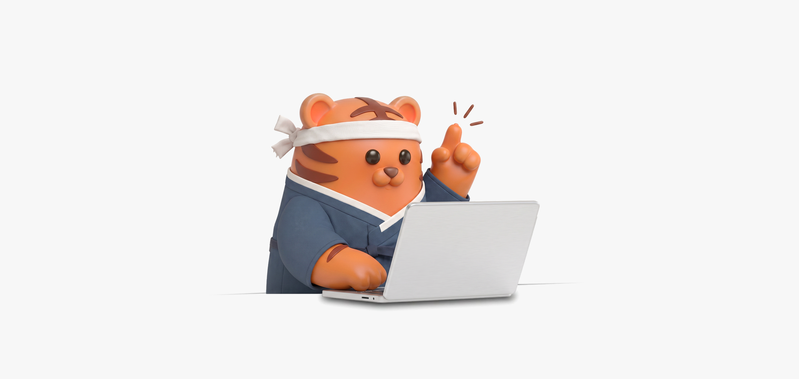
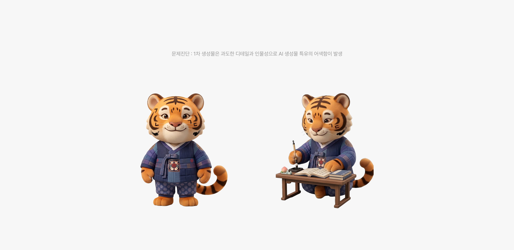
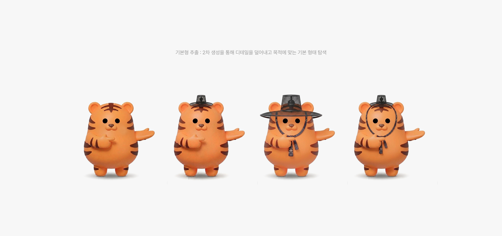
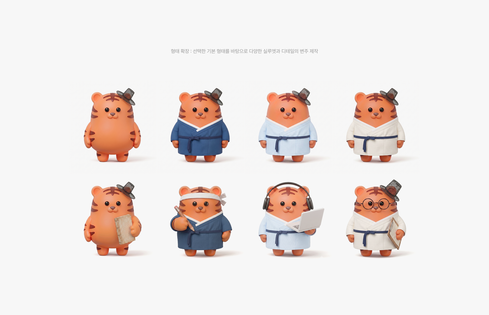

KET 캐릭터 개발
국내 최초로 유럽공통참조기준(CEFR)을 준거로 개발된 한국어논술평가(KET)의 브랜드 정체성을 강화하고 평가 서비스의 문턱을 낮추기 위해 진행
자칫 단단하고 어렵게 느껴질 수 있는 논술 평가라는 분야에 친근한 페르소나를 부여하여 응시자와의 심리적 거리를 좁히고, KET만의 독창적인 한국적 전문성을 전달하는 데 초점을 맞춤

왜, 캐릭터가 필요했나
단단하고 어려운 이미지
'한국어논술평가'라는 분야 자체가 응시자에게 진입장벽이 높고 딱딱하게 느껴짐
브랜드 정체성 부재
CEFR 기반의 독창적 전문성을 상징할 시각적 자산이 없어 브랜드 기억점이 약함
정서적 거리감
캐릭터를 안내·응원·격려 등 다양한 상황에 활용해 시험 전반의 긴장을 완화하고, 정서적 친밀감을 형성하는 가이드 역할 부여
누구를 위한 캐릭터인가
한국어를 배우는 외국인 응시자
낯선 문화권에서 한국어 실력을 공식적으로 증명해야 하는 부담을 안고 KET를 마주하는 외국인 학습자
Step 01
모티브 선정 및 브랜드 맞춤 캐릭터 특성 정의
한국의 상징성 탐색
KET가 국내 최초로 국제 언어 기준(CEFR)을 적용한 한국어 논술 평가인 만큼, 정통성과 친근함을 동시에 담을 수 있는 한국적 아이콘을 폭넓게 탐색
호랑이 모티브 채택
설화와 전통 문화 속에서 지혜롭고 든든한 수호자로 등장하는 '호랑이'를, 논술이라는 여정을 함께 지켜주는 존재로 해석해 최종 모티브로 확정
페르소나 설정
단순한 동물 캐릭터가 아니라, 한국어 논술의 학구적 깊이와 전문성을 대변하는 '지혜롭고 유익한 멘토'로 페르소나를 구체화
한국화 작업
따뜻한 오렌지·브라운 톤을 기본 체색으로 삼아 한국 고유의 정서를 절제된 조형 언어로 구현
오브젝트 구성
갓/탕건 : 학식과 지혜, 선비 정신을 상징하는 헤어웨어
도포 : 정갈하고 격식 있는 인상을 완성하는 전통 의복 (네이비·스카이블루·화이트 3색)
서책·붓·스마트패드·마패 : 전통 기록 도구와 현대 평가 매체를 자연스럽게 잇는 보조 오브젝트

Step 02
캐릭터 레퍼런스 체크 및 선정
레퍼런스 수집 및 분석
3D 마스코트, 한국적 스타일의 캐릭터 디자인, 3등신 피규어 형태의 레퍼런스를 다각도로 수집해 표현 방향의 폭을 검증
최종 레퍼런스 확정
입체감은 살아있으되 양감과 곡선이 부드러운 스타일을 지향점으로 선정
정자세와 오브젝트 결합이 가장 자연스러운 형태를 최종 가이드라인으로 확정

Step 03
제미나이 기반 AI 이미지 생성 및 정제
프롬프트 설계
모티브·3등신 비율·한국적 오브젝트·3D 피규어 질감 등 앞서 정립한 키워드를 조합해 제미나이 최적화 프롬프트로 구성
기본형 추출
정면 정자세의 '기본형'을 우선 추출해 일관된 체형과 얼굴 비율을 확보
베리에이션
마스터 폼을 기준점으로 기본형 → 갓 착용형 → 도포 3색(네이비/스카이블루/화이트) 순으로 확장해, 하나의 세계관 안에서 자연스럽게 이어지는 캐릭터 라인업을 완성

결과
한국적 정서와 3등신 친근함을 결합해 딱딱했던 논술 평가에 표정을 부여
기본형부터 도포 3색 베리에이션까지, 일관된 브랜드 자산으로 완성
01 · 단단하고 어려운 이미지
3등신 비율과 한국화 작업으로 해결
02 · 브랜드 정체성 부재
호랑이 모티브 캐릭터 라인업으로 해결
03 · 정서적 거리감
표정·제스처를 통한 친근한 정서 표현으로 해결
04 · AI 특유의 과도한 디테일·사실감 문제
레퍼런스 재선정 및 반복 정제 과정으로 해결